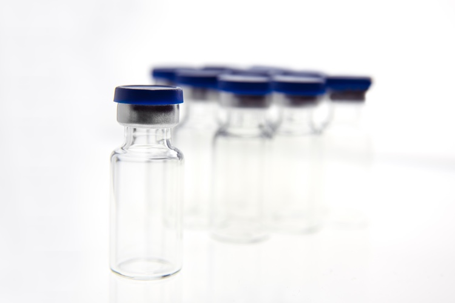

Simulated vials — overview
Material and lighting fidelity in the simulated vial scenes.
Designed high-fidelity simulated pharmaceutical vials with realistic defects — glass particles, sand particles — to generate synthetic training data that improves model robustness for defect detection during the QC process.
Material and lighting fidelity in the simulated vial scenes.
Synthetic vial with embedded glass-particle contamination.
Synthetic vial with sand / black-particle contamination.
